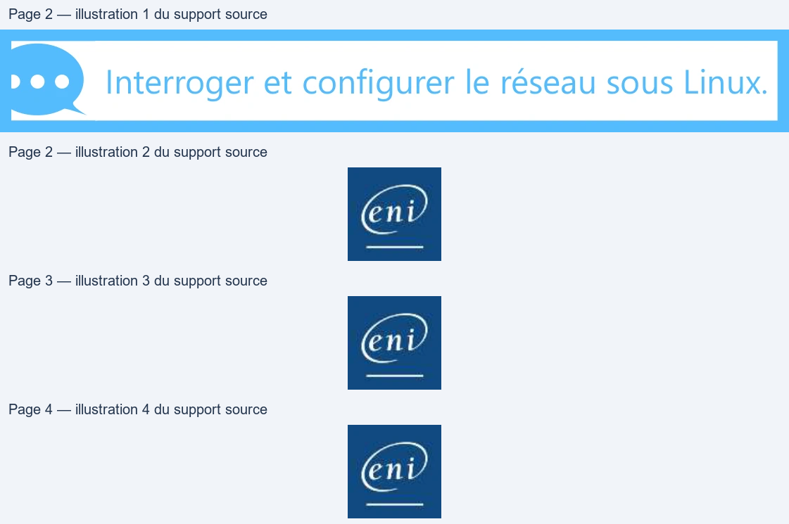
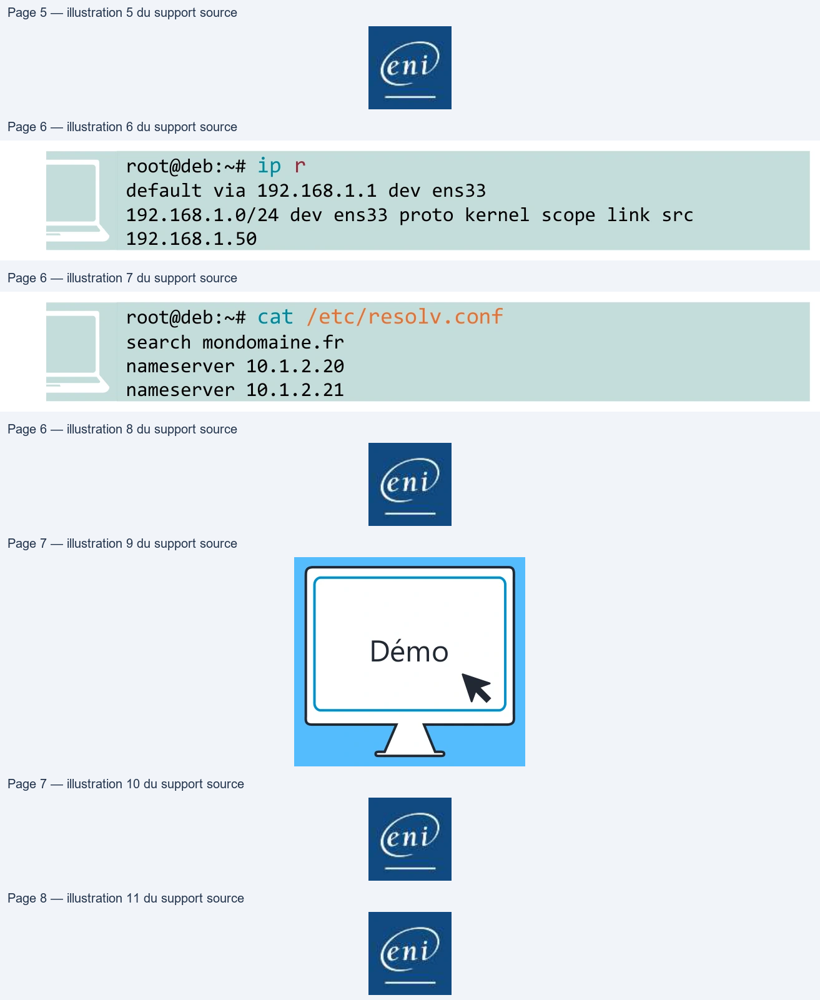
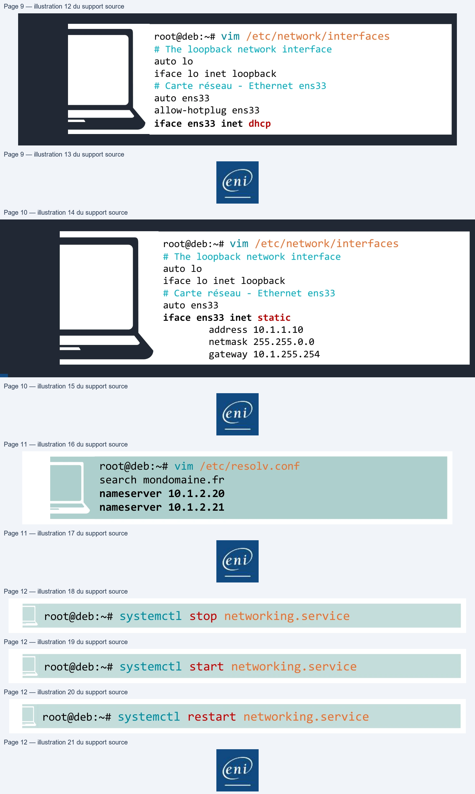
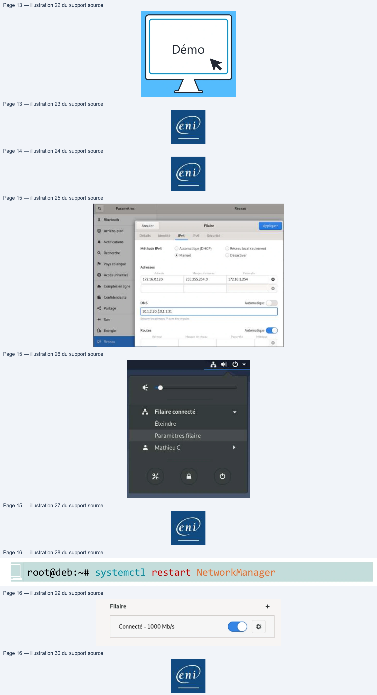
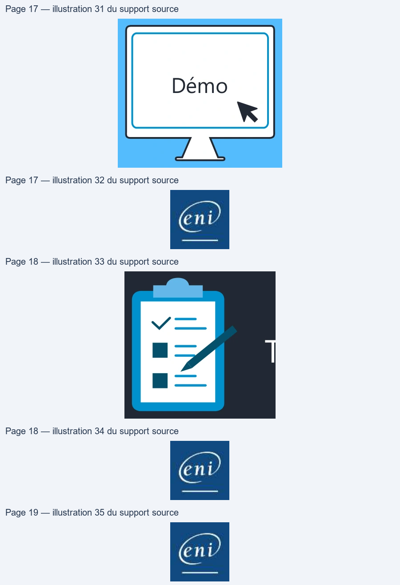
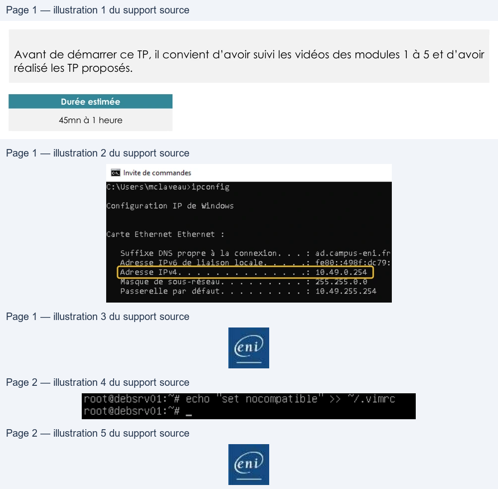
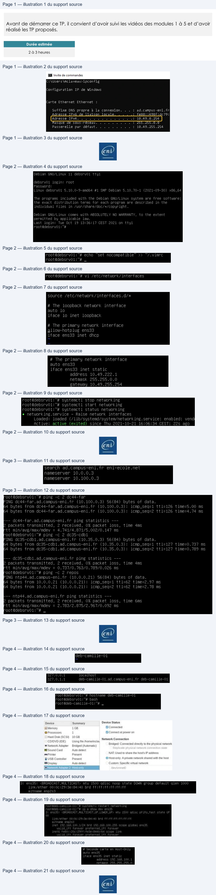
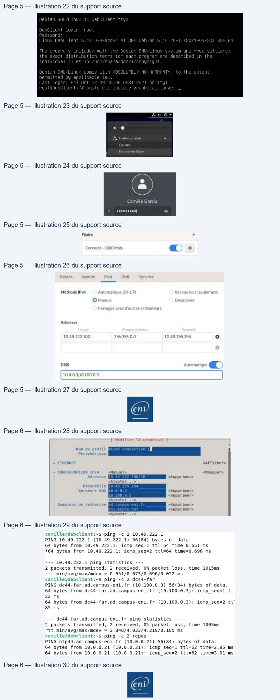

Module 05 — Gestion du réseau¶
La transcription du support Drive et l’aide pédagogique sont séparées pour rendre leur provenance explicite.
SOURCE DRIVE · TRANSCRIPTION DU SUPPORT
Le contenu des documents du dossier TSSR est transcrit ci-dessous, page par page. Les textes, tableaux et illustrations sont intégrés à la page Web ; aucun PDF ENI n’est diffusé par ce lecteur. Les versions et les consignes restent celles des supports de formation. Les compléments IA sont conservés dans leur onglet distinct.
Support · RES24_0050B - M05 - Linux Administration (Debian) · 19 pages transcrites
Page 1
Administration Debian
GNU/Linux
Module 05 – Gestion du réseau
Page 2
Gestion du réseau
Objectifs
• Prendre des informations sur le réseau
• Configuration réseau d’un système sans interface
graphique
• Configuration réseau d’un système avec interface
graphique
Interroger et configurer le réseau sous Linux.
Texte relevé dans les illustrations
End
Page 3
Gestion du réseau
Prendre des informations
Page 4
Les prérequis
Prise d’information réseau
• Pour une mise en réseau des postes client et serveur, il faut que la
couche IP soit correctement réalisée
• La configuration IP a généralement besoin :
• D’une adresse IP
• D’un masque réseau
• Potentiellement d’une passerelle par défaut
• Afin de pouvoir résoudre les noms d’hôtes, il faudra aussi
renseigner un ou des serveurs DNS

Page 5
Les prérequis
Connaître l’adresse réseau
• Dans un shell, commande ip avec l’argument address ou son raccourci a
root@deb:~# ip a
1: lo: <LOOPBACK,UP,LOWER_UP> mtu 65536 qdisc noqueue state UNKNOWN group default
qlen 1000
link/loopback 00:00:00:00:00:00 brd 00:00:00:00:00:00
inet 127.0.0.1/8 scope host lo
valid_lft forever preferred_lft forever
inet6 ::1/128 scope host
valid_lft forever preferred_lft forever
2: ens33: <BROADCAST,MULTICAST,UP,LOWER_UP> mtu 1500 qdisc pfifo_fast state UP
group default qlen 1000
link/ether 00:0c:29:7c:ff:ba brd ff:ff:ff:ff:ff:ff
inet 192.168.1.50/24 brd 192.168.1.255 scope global dynamic ens33
valid_lft 85457sec preferred_lft 85457sec
inet6 fe80::20c:29ff:fe7c:ffba/64 scope link
valid_lft forever preferred_lft forever
Page 6
Les prérequis
Connaître passerelle et serveur DNS
• Dans un shell, commande ip avec l’option route ou son raccourci r
root@deb:~# ip r default via 192.168.1.1 dev ens33 192.168.1.0/24 dev ens33 proto kernel scope link src 192.168.1.50
• Les informations de DNS se trouvent dans le fichier /etc/resolv.conf
root@deb:~# cat /etc/resolv.conf search mondomaine.fr nameserver 10.1.2.20 nameserver 10.1.2.21
Texte relevé dans les illustrations
J
d
Page 7
Les prérequis
Démo
Informations réseau
Page 8
Gestion du réseau
Système sans interface
graphique

Page 9
Système sans interface graphique
Configuration IP en DHCP
• La configuration IP et DNS sur un système sans interface graphique se fait dans
deux fichiers de configuration
• Le fichier /etc/network/interfaces permet de gérer la partie IP
• Il est possible d’avoir une configuration simplifiée via un serveur DHCP ou une
configuration statique
root@deb:~# vim /etc/network/interfaces # The loopback network interface auto lo iface lo inet loopback # Carte réseau - Ethernet ens33 auto ens33 allow-hotplug ens33 iface ens33 inet dhcp
Texte relevé dans les illustrations
N
Page 10
Système sans interface graphique
Configuration IP statique
• Mettre en place une configuration statique dans le fichier
/etc/network/interfaces
root@deb:~# vim /etc/network/interfaces # The loopback network interface auto lo iface lo inet loopback # Carte réseau - Ethernet ens33 auto ens33 iface ens33 inet static
address 10.1.1.10 netmask 255.255.0.0 gateway 10.1.255.254
Texte relevé dans les illustrations
N
Page 11
Système sans interface graphique
Configuration serveur DNS statique
• Mettre en place une configuration statique dans le fichier
/etc/resolv.conf via la directive nameserver
root@deb:~# vim /etc/resolv.conf search mondomaine.fr nameserver 10.1.2.20 nameserver 10.1.2.21
Texte relevé dans les illustrations
À
|
Page 12
Système sans interface graphique
Prise en compte des modifications
On utilise la commande systemctl pour gérer le service networking
• Arrêter le service réseau
root@deb:~# systemctl stop networking.service
• Démarrer le service réseau
root@deb:~# systemctl start networking.service
• Redémarrer le service réseau
root@deb:~# systemctl restart networking.service
Texte relevé dans les illustrations
ZT...
eee

Page 13
Système sans interface graphique
Démo
Mise en place d’une adresse IP fixe sur serveur
Debian
Page 14
Gestion du réseau
Configuration réseau
d’un système graphique
Page 15
Configuration réseau d’un système graphique
Gestion du réseau avec Network Manager
Network Manager est utilisé dans le cas d’un système Linux avec
interface graphique (Desktop)
Texte relevé dans les illustrations
#
Bluetooth
4
Arrière-plan
A Notifications
—
|
Méthode IPv4
Automatique (DHCP)
Réseau
local seulernent
79°
.
Recherche
© Manuel
Désactiver
ea
Filaire connecté
~
Pays etlangue
ra
=
Adresses
Eteindre
© Acces universel
-
-
Paramètres filaire
172.16.0.120
255.255.254.0
172.16.1.254
°
cd
o
L
'
æ Comptes
en tigne
°
=
MathieuC
L
ay
W& Confidentialite
DNS
Automatique
*S. Partage
10,1,2.20,10.1.2.21
|
az
1
“ Son
7e
&
O
Energie
Routes
Automatique a
}
env
©
Page 16
Configuration réseau d’un système graphique
Prise en compte des modifications
On utilise la commande systemctl pour gérer le service
NetworkManager
Redémarrer le service réseau
root@deb:~# systemctl restart NetworkManager
Ou simplement l’interface graphique (Off, On)
Texte relevé dans les illustrations
Filaire
+
Connecté - 1000 Mb/s
@)>)
+
eni

Page 17
Gestion du réseau
Démo
Gestion du réseau au sein d’un bureau Gnome
Page 18
Gestion du réseau
TP
Démo
Gestion de la configuration réseau d’un poste
Lecture continue du texte source
Gestion du réseau
TPDémo
Gestion de la configuration réseau d’un posteTexte relevé dans les illustrations
|
Page 19
Gestion du réseau
Conclusion
• Vous savez consulter les informations réseau sur un système
Linux
• Vous pouvez configurer l’adressage IP sur un serveur
• Vous pouvez configurer l’adressage IP sur un poste avec
interface graphique

Référence du document : 1FKHUR6aoVOxjBVWtiPOjCKtnnxF8GatF · SHA-256 69edc58f1bc1f995…
Énoncé · M05TP01 - Enoncé - Gestion de la configuration réseau dun poste · 2 pages transcrites
Page 1
Administration Debian GNU/Linux
Gérer la configuration
réseau d’un poste
TP du Module 05 – Gestion du réseau
Avant de démarrer ce TP, il convient d’avoir suivi les vidéos des modules 1 à 5 et d’avoir
réalisé les TP proposés.
Durée estimée
45mn à 1 heure
Énoncé
I.
Configurer une adresse IP statique sur le serveur sans
environnement graphique
Configurer la 1ere carte réseau détectée (ens33) avec l'adressage suivant :
•
Adresse IP : 10.X.Y.1/16
o Avec le second octet X=n° de réseau.
▪
Pour récupérer votre réseau de salle, depuis le poste Windows hôte,
ouvrir une fenêtre cmd et lancer la commande ipconfig
Dans cet exemple, le numéro de salle est 49
o avec le troisième octet Y=votre n° de stagiaire (donné par votre coach en
début de semaine)
•
Passerelle : 10.X.255.254
Page 1/2
© ENI – Tous droits réservés
Texte relevé dans les illustrations
EX Invite de commandes
C:\Users\mclaveau>ipconfig
Configuration
IP de Windows
Carte
Ethernet
Ethernet
:
suffixe DNS propre
à
la
connexion.
.
.
:
ad.campus-eni.fr
Adresse
IPv4.
.
.
.
.
.
.
.
.
.
.
.
.
.:
10.49.8.254
Masque
de sous-réseau.
.
.
.
.
.
.
.
.
:
255.255.6.8
Passerelle
par
défaut.
.
.
.
.
.
.
.
.
:
18.49.255.254
Page 2
Administration Debian GNU/Linux
Vérifier et adapter si nécessaire les paramètres de résolution de nom :
•
Serveurs DNS : serveurs DNS de l’ENI
(à récupérer depuis votre poste avec ipconfig /all)
•
Domaines résolus par défaut : ad.campus-eni.fr et eni-ecole.net
•
Pour valider la bonne prise en compte du point précédent, vous pourrez essayer un
ping vers les hôtes suivants :
o dc44-far
o dc35-cdb1
o repos
Modifier le nom de la machine :
•
Indiquer le nom : deb-<prénom>-01 avec <prénom> = votre prénom
Attention, il y a 2 fichiers à modifier ! (/etc/hosts et /etc/hostname)
Ajouter une 2e carte réseau en Host-only à votre VM et utiliser les paramètres suivants :
•
IP : 192.168.100.1/24
•
Pas de passerelle par défaut
II.
Configurer une adresse IP statique sur la machine avec
environnement graphique
Configurer un adressage IP statique compatible avec la 1ere carte réseau de la VM Debian
sans environnement graphique
•
Pouvez-vous pinguer l'autre VM Debian ?
•
Pouvez-vous pinguer les serveurs ENI ?
Astuce
Précaution préalable : créer le fichier .vimrc avec l'activation du mode nocompatible
Pour le moment notre système est nativement en mode compatible Unix
Solution
Une solution est proposée pour ce TP sous la forme d'un PDF commenté, disponible dans les
ressources à télécharger.
Page 2/2
© ENI – Tous droits réservés
Texte relevé dans les illustrations
rootd@debsryvoi:"# echo
“set nocompatible
=>
“/.yvinrc
root@debsryvol:"# _

Référence du document : 1ACf03zGCvDpm38SKRrP5DNIBKZyzLGL- · SHA-256 115dc7cb2a0e9401…
Correction · M05TP01 - Solution - Gestion de la configuration réseau dun poste · 6 pages transcrites
Correction originale : à consulter après avoir tenté l’exercice.
Page 1
Administration Debian GNU/Linux
Gérer la configuration
réseau d’un poste
TP du Module 05 – Gestion du réseau
Avant de démarrer ce TP, il convient d’avoir suivi les vidéos des modules 1 à 5 et d’avoir
réalisé les TP proposés.
Durée estimée
2 à 3 heures
Solution
I.
Configurer une adresse IP statique sur le serveur sans
environnement graphique
Configurer la 1ere carte réseau détectée (ens33) avec l'adressage suivant :
•
Adresse IP : 10.X.Y.1/16
o Avec le second octet X=n° de réseau.
▪
Pour récupérer votre réseau de salle, depuis le poste Windows hôte,
ouvrir une fenêtre cmd et lancer la commande ipconfig
Dans cet exemple, le numéro de salle est 49
o avec le troisième octet Y=votre n° de stagiaire (donné par votre coach en
début de semaine)
•
Passerelle : 10.X.255.254
Pour cette solution, je vais utiliser la salle 49 et le numéro de stagiaire 222
Donc le reseau 10.49.222.0/16
Page 1/6
© ENI – Tous droits réservés
Texte relevé dans les illustrations
EX Invite de commandes
C:\Users\mclaveau>ipconfig
Configuration
IP de Windows
Carte
Ethernet
Ethernet
:
suffixe DNS propre
à
la
connexion.
.
.
:
ad.campus-eni.fr
Adresse
IPv4.
.
.
.
.
.
.
.
.
.
.
.
.
.:
10.49.8.254
Masque
de sous-réseau.
.
.
.
.
.
.
.
.
:
255.255.6.8
Passerelle
par
défaut.
.
.
.
.
.
.
.
.
:
18.49.255.254
Page 2
Administration Debian GNU/Linux
Ouvrir une session avec l'utilisateur root
Précaution préalable : créer le fichier .vimrc avec l'activation du mode nocompatible
Pour le moment notre système est nativement en mode compatible Unix
Le fichier interfaces dans sa configuration d'origine
Modifier la mention allow-hotplug en auto
passer de dhcp à static
ajouter l’adresse (attention à l’orthographe anglaise),
le masque de sous reseau et la passerelle.
Redémarrer le service networking,
optionnel : verifier le statut du service.
Page 2/6
© ENI – Tous droits réservés
Texte relevé dans les illustrations
Debian GNU/Linux
11
debsrvo1
tty1
debsrv01
login:
root
Password:
Linux
debsrv01
5.10.0-9-amd64
#1
SMP
Debian
5.10.70-1
(2021-09-30)
x86_64
The programs
included
with
the
Debian
GNU/Linux
system are free
software;
the exact
distribution
terms
for
each program are described
in the
individual
files
in
/usr/share/doc/x/copyright.
Debian
GNU/Linux
comes
with
ABSOLUTELY
NO
WARRANTY,
to
the
extent
permitted
by applicable
law.
Last
login:
Tue
Oct
19
13:36:17
CEST 2021
on
tty1
root@debsrv01:"#
root@debsryv01:"#
echo
set
nocompatible
/.¥vimrc
root@debsrvo1:"#
_
root@debsrv0i:"#
vi
/etc/network/
interfaces
source
/etc/network/interfaces.d/x
#
The
loopback
network
interface
auto
lo
iface
lo
inet
loopback
#
The primary
network
interface
allow-hotplug ens33
iface
ens33
inet
dhcp
# The primary network
interface
auto
ensas
iface ens33
inet
static
address
10.49.222.1
netmask
255.255.0.0
gateway 10.49.255.
254
root@debsryv01:"#
systemctl
stop networking
root@debsryv01:"#
systemctl
start
networking
root@debsrv01:"#
systemctl
status
networking
e
networking.service
- Raise network
interfaces
Loaded:
loaded
(/lib/systemd/system/networking.service;
enabled;
vend
Active:
active
(exited)
since Thu 2021-10-21
16:06:34
CEST;
22s
ago
En
Page 3
Administration Debian GNU/Linux
Vérifier et adapter si nécessaire les paramètres de résolution de nom :
Modifier le fichier /etc/resolv.conf
•
Serveurs DNS : serveurs DNS de l’ENI
•
Domaines résolus par défaut : ad.campus-eni.fr et eni-ecole.net
hostname
Une seule directive search pour plusieurs domaines de recherches
mais une directive nameserver par serveur DNS
•
Pour valider la bonne prise en compte du point précédent, vous pourrez essayer un
ping vers les hôtes suivants :
o dc44-far
o dc35-cdb1
o repos
Les deux adresses “DC” sont résolues avec le domaine ad.campus-eni.fr
L’adresse repos elle appartient par contre au domaine eni-ecole.net
Astuce avec ping, l’option “-c” permet de préciser le nombre de ping avant de quitter la commande
Page 3/6
© ENI – Tous droits réservés
Texte relevé dans les illustrations
search ad.campus-eni.fr eni-ecole.net
nameserver
10.0.0.3
nameserver
10.100.0,5
root@debsrv0i:"#
ping
-c
2 de44-far
ING dce44-far.ad.campus-eni.fr
(10.100.0.3)
56(84)
bytes
of
data
64 bytes
from dce44-far.ad.campus-eni.fr
(10.100.0.3):
icmp_seq=1
tt1=126
time=5.00
ms
64 bytes
from dce44-far.ad.campus-eni.fr
(10.100.0.3):
icmp_seq=2 tt1=126 time=4.74
ms
-- de44-far.ad.campus-eni.fr
ping statistics
---
2 packets
transmitted,
2 received,
0%
packet
loss,
time
4ms
tt
min/avg/max/mdey
=
4.741/4.871/5.002/0.147
ms
root@debsrvoi:"#
ping
-c
2 dec35-cdb1
ING de35-cdb1i.ad.campus-eni.fr
(10.35.0.3)
56(84)
bytes
of
data
64
bytes
from de35-cdbi.ad.campus-eni.fr
(10.35.0.3):
icmp_seq=1 tt1=127 time=0.737
ms
64 bytes
from dc35-cdbl.ad.campus-eni.fr
(10.35.0.3):
icmp_seq=2 tt1=127 time=0.789
ms
dce35-cdb1.ad.campus-eni.fr
ping statistics
P packets
transmitted,
2 received,
0%
packet
loss,
time
4ms
tt
min/ave/max/mdev
=
0.797/0.763/0.789/0.026
ms
oot@debsrv01:"#
ping
-c
2 repos
ING ntp44.ad.campus-eni.fr
(10.0.0.21)
56(84)
bytes
of
data.
64
bytes
from 10.0.0.21
(10.0.0.21):
icmp_seg=1 tt1=62 time=2.97
ms
64
bytes
from 10.0.0.21
(10.0.0.21):
icmp_seq=2
tt1l=62
time=2.78
ms
-- ntp44.ad.campus-eni.fr
ping
statistics ---
P packets
transmitted,
2 received,
0%
packet
loss,
time
6ms
rtt
min/ave/max/mdev
= 2.783/2.875/2.967/0.092
ms
root@debsrvoi:"#
_
En
Page 4
Administration Debian GNU/Linux
Modifier le nom de la machine :
•
Indiquer le nom : deb-<prénom>-01 avec <prénom> = votre prénom
Attention, il y a 2 fichiers à modifier ! (/etc/hosts et /etc/hostname)
→
Le fichier hostname contient uniquement le nom d'hôte.
→
Sur la seconde ligne du fichier hosts il faut modifier nom long et nom court de l'hôte.
La commande hostname rpermet la modification du nom d'hôte sans redémarrage
Il faut ouvrir un nouveau shell ou une nouvelle session pour verifier cette prise en compte.
Ajouter une 2e carte réseau en Host-only à votre VM et utiliser les paramètres suivants :
Dans les paramètres de la machine virtuelle, ajout de la seconde carte
La commande ip a permet de montrer la nouvelle carte, ici ens35.
•
IP : 192.168.100.1/24
•
Pas de passerelle par défaut
→
Ajouter ces lignes dans le fichier /etc/network/interfaces
Après redémarrage du service networking, la carte ens35 a récupérée son adresse IP
Page 4/6
© ENI – Tous droits réservés
Texte relevé dans les illustrations
_
on
|
deb-camille-01
root@debsrv01:"#
vi
/etc/hostname
127.0.0.1
localhost
127.0.1.1
deb-camille-01.ad.campus-eni.fr
deb-camille-01
root@debsrvol:"#
hostname
deb-camille-01
root@debsrv01:~#
bash
root@deb-camille-01:"#
_
Device
Summary
Device Status
Hard
k
(SC
10
G8
=DOVD
(IDE
inon
FRS
Network Connection
MSound
Card
Auto detect
=
3:
ens35:
<BROADCAST,MULTICAST>
mtu
1500
qdisc
noop
state
DOWN
group default
glen
100
link/ether 00:0c:29:3e:84:40
brd
ff:ff:ff:ff:ff:ff
altname
enp2s3
# Seconde
carte
en
Host-Only
auto
ens35
iface
ens35
inet
static
address
192.168.100.1
netmask_255.255.255.0
+
en

Page 5
Administration Debian GNU/Linux
II.
Configurer une adresse IP statique sur la machine avec
environnement graphique
Au démarrage saisir systemctl isolate graphical pour lancer la couche graphique
→
Ouvrir une session avec l'utilisateur standard
Se rendre dans les paramètres de la carte ethernet.
Configurer un adressage IP statique compatible avec la 1ere carte réseau de la VM Debian
sans environnement graphique
Cliquer sur l'icone en forme de roue dentelée
Dans l’onglet IPv4 passer en mode manuel et saisir une adresse valide. Pas de passerelle.
NB : l’interface graphique ne permet pas de saisir de nom de domaine DNS.
Page 5/6
© ENI – Tous droits réservés
Texte relevé dans les illustrations
Debian
GNU/Linux
11
DebClient
tty1
DebClient
login:
root
Password:
Linux
DebClient
5.10.0-9-amd64
#1
SMP
Debian
5.10.70-1
(2021-09-30)
x86_64
he
programs
included
with
the
Debian
GNU/Linux
system
are free
software;
the
exact
distribution
terms
for
each
program are
described
in
the
ndividual
files
in
/usr/share/doc/x
pyright.
Debian
GNI
nux
comes
with
ABSOLUTELY
NO WARRANTY,
to
the
extent
permitted
by applicable
law.
Last
login: Fri Oct 22 09:43:08 CEST 2021
on tty
root@DebClient:~#
systemctl
isolate graphical.target _
ae
OF
fe
Filvine
commento
-
Camille Garcia
tou
Pee|
@
Rarurnetyes frere
Faire
+
Detads
entité
1Pv4
Pv
Sécurite
Méthode IPv4
Automatique
(DH
Rese
leme
Adresses
10.49.222.100
255.255.0.0
10.49.255.254
o
10.0.0,3,10.100.0.3
|
Page 6
Administration Debian GNU/Linux
Au besoin les renseigner via la commande nmtui
Désactiver/réactiver la carte afin que ces modifications soient prises en compte
•
Pouvez-vous pinguer l'autre VM Debian ?
•
Pouvez-vous pinguer les serveurs ENI ?
Si la configuration est correcte, il est possible de pinguer l'autre VM Debian comme les serveurs ENI
Page 6/6
© ENI – Tous droits réservés
Texte relevé dans les illustrations
Modifier La contéxion -— —_
AL
Non du profil
n
Périphérique
= ETHENNET
<Afficher>
CONFIGURATION 1Pv4
<Manuel>
<Masquer>
Adresses LTTE <Supprimer>
<Ajouter...>
Passerelle
Serveurs ONS
<Supprimer>
<Supprimer>
<Ajouter...>
Domaines de recherche
<Supprimer>
<Supprimer>
<Ajouter,..>
camille@debclient:-$ ping
-c
2 10.49.222.1
PING 10.49.222.1
(10.49.222.1)
56(84)
bytes of data.
64 bytes from 10.49.222.1:
icmp seq=1 ttl=64 time=0.651 ms
*64 bytes from 10.49.222.1:
icmp seq=2 ttl=64 time=0.696 ms
---
10.49.222.1 ping statistics
---
2 packets transmitted,
2
received,
0% packet loss,
time 1015ms
rtt min/avg/max/mdev = 0.651/0.673/0.696/0.022
ms
camille@debclient:~$ ping
-c
2 dc44-far
PING dc44-far.ad.campus-eni.fr
(10.100.0.3)
56(84)
bytes of data.
64 bytes from dc44-far.ad.campus-eni.fr
(10.100.0.3):
icmp seq=1 tt
22
ms
64 bytes from dc44-far.ad.campus-eni.fr
(10.100.0.3):
icmp_seq=2 tt
85
ms
--- dc44-far.ad.campus-eni.fr ping statistics
---
2 packets transmitted,
2
received,
0% packet loss,
time 1003ms
rtt min/avg/max/mdev = 3.848/4.033/4.219/0.185 ms
camille@debclient:~$ ping
-c
2
repos
PING ntp44.ad.campus-eni.fr
(10.0.0.21)
56(84)
bytes of data.
64 bytes from 10.0.0.21
(10.0.0.21):
icmp_seq=1 ttl=62 time=2.95 ms
64 bytes from 10.0.0.21
(10.0.0.21):
icmp_seq=2 ttl=62 time=3.01 ms
Eni

Référence du document : 1OL_ukPXTnJ0uYLwwOkj_NZM4PQtkdVZ5 · SHA-256 d74f1cbf6f7b4042…
Complément IA / externe au cours — fiche pédagogique du portail
Cette fiche contient une reformulation et des aides d’apprentissage rédigées par IA. Elle est distincte de la transcription des documents du Drive et ne la remplace pas. Les schémas de synthèse de cette fiche sont des illustrations IA / externes au cours, sauf les captures explicitement attribuées à un document source.
Sources originales (A) : support et TP TSSR « Gestion de la configuration réseau d’un poste ». Contenu du portail (B) : reformulation structurée des sources TSSR.
Objectifs¶
- Lire la configuration IP d’un poste Debian.
- Identifier adresse IP, masque, passerelle et résolution de noms.
- Vérifier une modification de réseau sans supposer sa réussite.
Les éléments à contrôler¶
La source rappelle qu’une configuration IP comprend généralement une adresse, un masque, éventuellement une passerelle et des serveurs de noms. Une connectivité apparente ne garantit pas que tous ces éléments sont corrects : tester l’interface, le routage et la résolution séparément.
Procédure¶
- Relever l’état actuel avant toute modification.
- Modifier uniquement le paramètre requis dans l’environnement de laboratoire.
- Contrôler l’adresse et les routes.
- Tester d’abord une cible IP, puis la résolution d’un nom.
- Consigner le résultat ou restaurer la configuration attendue.
À retenir¶
Une configuration réseau est complète lorsque l’interface, le routage et la résolution fonctionnent conformément au besoin ; un seul ping ne suffit pas à conclure.
Vérification des acquis¶
- Quelle commande affiche les routes ?
- Quel contrôle distingue un problème DNS d’un problème de connectivité IP ?
Réponses
ip route.- Tester une cible IP puis un nom d’hôte.
M05 — Gestion du réseau
10 questions
Teste tes connaissances sur ce module.